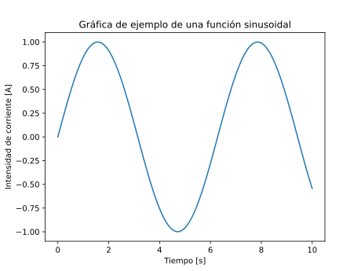
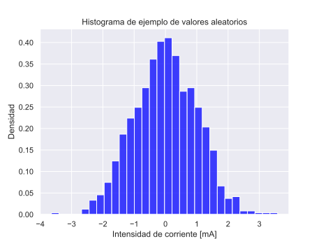
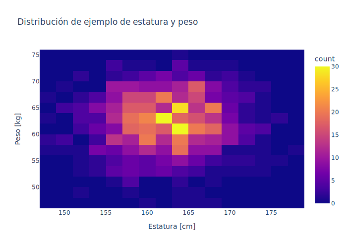

Análisis exploratorio de datos
El análisis exploratorio de datos (EDA, Exploratoy Data Analysis) es un paso esencial en todo trabajo de ciencia e ingeniería de datos. Como su nombre sugiere, es una investigación de las características generales de los datos y puede incluir una descripción cualitativa de los datos, estadística descriptiva y gráficos.
Pandas es una opción popular para manipular los datos obtenidos.
Procesamiento y análisis descriptivo con Pandas
En el PyX número 2 (Py2) hay una amplia discusión sobre Pandas.
Aquí basta con decir que Pandas es el equivalente programático de Microsoft Office Excel y otros programas de ofimática de hojas de cálculo, como Google Spreadsheets y LibreOffice Calc.
Pandas manipula datos tabulares (filas y columnas, y en ese sentido planos) por medio del objeto DataFrame, que sería equivalente a una pestaña u hoja de Excel. Sobre los datos en este DataFrame es posible hacer todo tipo de operaciones y aplicar todo tipo de funciones, al igual que en Excel.
Un ejemplo de creación de un DataFrame es el siguiente:
import pandas as pd
# Crear datos de ejemplo como un diccionario con listas
data = {
"Nombre": ["Andrés", "Brenda", "Carlos"],
"Edad": [17, 21, 22],
"Ciudad": ["Heredia", "Puntarenas", "Guanacaste"],
}
# Crear el objeto DataFrame
df = pd.DataFrame(data)
# Mostrar el DataFrame
print(df)
# Obtener el promedio de edad
promedio_edad = df["Edad"].mean()
print("Promedio de edad:", promedio_edad)
Con el resultado:
Nombre Edad Ciudad
0 Andrés 17 Heredia
1 Brenda 21 Puntarenas
2 Carlos 22 Guanacaste
Promedio de edad: 20.0
Quizá las ventajas de Pandas son la posibilidad de trabajar con grandes cantidades de datos (limitados solamente por la memoria de la computadora) con mayor rendimiento y eficiencia. Excel tiene limitaciones de filas (1.048.576) y columnas (16.384, XFD) y su desempeño se deteriora considerablemente al aproximarse a estos límites. También Pandas permite la integración total con los múltiples paquetes de Python para crear flujos automatizados de procesamiento de datos, incluyendo aprendizaje automático e interfaces de entrada y salida (sensores, actuadores, etc.).
Además, por supuesto, Pandas es de código abierto y gratis.
Visualización de datos
En el PyX número 3 (Py3) hay una discusión sobre los conceptos básicos de graficación con Matplotlib.
Matplotlib es popular y poderoso, pero no es la única opción de graficación en Python. Otras opciones populares y con buena documentación son:
- Seaborn: basada en Matplotlib pero enfocada en gráficos estadísticos.
- Plotly: sintaxis amigable y disponible para varios lenguajes de programación.
A continuación hay algunas gráficas con cada una de estas herramientas.
Características obligatorias de toda gráfica
Todas las gráficas hechas en el proyecto deben incluir:
- Nombre de los ejes
- Unidades (cuando aplica)
- Título descriptivo
Matplotlib

Seaborn

Plotly
